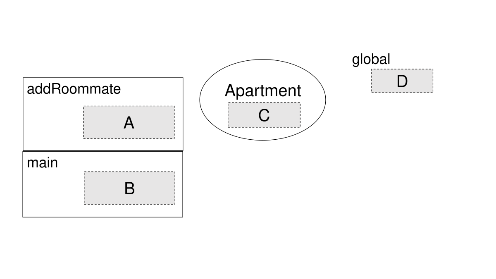
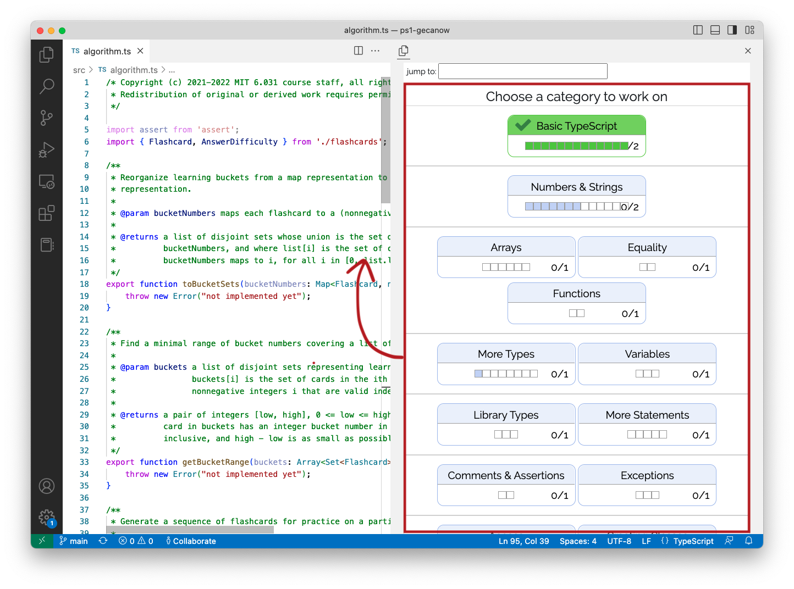
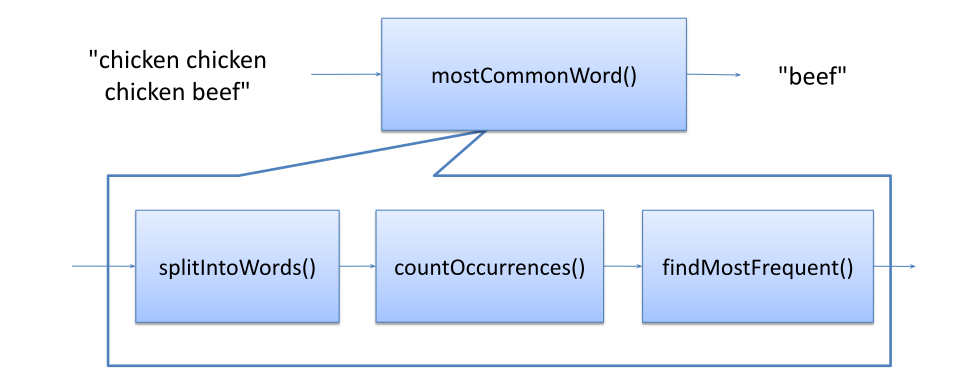

Reading 13: (Avoiding) Debugging
Software in 6.102
Objectives
The topic of today’s class is debugging.
First, we’re going to look at how to avoid debugging – ways to write code that either avoids debugging entirely, or at least makes it easy when we have to do it.
But sometimes you have no choice but to debug – particularly when the bug is found only when you plug the whole system together or reported by a user after the system is deployed, in which case it may be hard to localize it to a particular module. For those situations, we can suggest a systematic strategy for more effective debugging.
A good book about systematic debugging is Why Programs Fail by Andreas Zeller. Much of this reading is inspired by that book.
Finally, Debugging: The Nine Indispensable Rules for Finding Even the Most Elusive Software and Hardware Problems by David Agans is a readable, eminently practical guide to debugging in a variety of technical situations, from software to hardware to cars to plumbing. We refer to several of the Nine Rules in this reading.
A rogue’s gallery of bugs
Before we begin, let’s review the problem we’re trying to tackle, by listing a few common categories of bugs. You should have encountered most of these, either in previous readings in this course, or in your own programming experience.
Aliasing bug. This bug arises when there are two or more aliases to the same mutable object, and one alias mutates it when the others need it to remain unchanged. We saw examples in Designing Specifications, as well as in Abstraction Functions and Rep Invariants, since aliasing caused by rep exposure of an immutable type can be a particularly unexpected and pernicious bug.
Off-by-one bug. Examples of this category include:
- Confusion between 0-based indexing and 1-based indexing. In the date-handling functions you’re using, are months numbered 0-11 or 1-12?
- Termination conditions for a loop. When iterating backwards through an array, should the termination condition be
i > 0ori >= 0? Or when you are processing adjacent pairs of array elements,a[i]anda[i+1], should the termination condition bei < a.lengthori < a.length-1? - Fencepost bugs: if you have a fence with
nhorizontal rails, how many fenceposts do you need?
Ordering bug. Unlike aliasing and off-by-one bugs, this bug has no conventional name. But it arises when there is an arbitrary choice of ordering made differently by different communities or contexts, or depending on the mental model you have of the situation. For example, do you drive on the right, or the left? Even if you don’t drive, which side of the sidewalk do you walk on, and which side of a pair of double doors do you use? Getting it wrong leads to collisions. Common order confusions in programming include:
- Origin and orientation of the y axis. In 2D coordinate systems, sometimes the origin is in the lower left with y increasing upwards (as in most math classes), and sometimes in the upper left with y increasing downwards (as in almost all computer graphics).
- Order of coordinates. A related 2D confusion is whether coordinates are specified in x,y order as in geometry (horizontal coordinate first), or row,column order as in matrix indexing (horizontal coordinate last!)
- Copying. In a copying or data-transfer mutator, which should be the first parameter, the source or the target? Should you write
copy(from,to), orcopy(to,from)? (Before you say thatcopy(to,from)makes no sense, which order do assignment statements conventionally use?to = from! So there is indeed a mental model where this makes sense, and both orders appear in real APIs.)
Code-clone bug. As we discussed in Don’t Repeat Yourself, a block of code that has been cloned (copied and pasted) and adapted to a new location is another source of bugs, because the adaptation may be incomplete, and changes or fixes to one clone may fail to propagate to other clones. One tool found 28 code-clone bugs in the Linux kernel.
Mutating-while-iterating bug. This category arises when you want to add or remove elements from a data structure like a list, map, or set, while in the process of iterating over it. We saw this bug in the Functional Programming reading.
An actual insect. Rare, but a famous story.
reading exercises
How are months numbered in standard library APIs of the following languages? Is it 0-11 (so January is 0), or 1-12 (January is 1)?
Use the language’s official documentation on the web to find authoritative specs. Start with the package or class specified below, and look for the month parameter of a creator operation, or an observer operation for the month (which are hopefully consistent with each other).
(missing explanation)
(missing explanation)
(missing explanation)
(missing explanation)
For each of these API functions that copy or transfer data, does it copy a to b, or vice versa? Find authoritative specs on the web to answer the question.
(missing explanation)
(missing explanation)
(missing explanation)
a.paste(b) where a and b are Image objects in the Python Pillow image-processing library
(missing explanation)
These exercises inspire a piece of advice for debugging: read the specs for the APIs you are using! Does the function or type behave the way you think it does? Are there preconditions or postconditions you may have overlooked?
First defense: make bugs impossible
Zeller, Why Programs Fail, Chapter 3
The best defense against bugs is to make them impossible by design.
One way that we’ve already talked about is static checking. Static checking eliminates many bugs by catching them at compile time.
We also saw some examples of dynamic checking in earlier readings.
For example, Python makes array overflow bugs impossible by catching them dynamically.
If you try to use an index outside the bounds of a list, then Python automatically produces an error.
JavaScript is not as good, because it quietly returns undefined from a bad read.
The situation is even worse in older languages like C and C++, which silently allow bad writes beyond the bounds of a fixed-size array, which leads to bugs and security vulnerabilities.
In fact, in February 2024, the Office of the National Cyber Director released a report detailing various ways to improve cybersecurity practices, including moving away from languages that aren’t memory safe, such as C and C++.
Immutability is another design principle that prevents bugs, which comes in two flavors: immutable types and unreassignable references (constants).
String is an immutable type.
There are no methods that you can call on a string that will change the sequence of characters that it represents.
Strings can be passed around and shared without fear that they will be modified by other code.
TypeScript also gives us unreassignable references: variables declared with the keyword const, which can be assigned once but never reassigned.
It’s good practice to use const wherever possible when declaring local variables.
Like the type of the variable, these declarations are important documentation, which is useful to the reader of the code and statically checked by the compiler.
const letters: Array<string> = ['a', 'e', 'i', 'o', 'u'];The letters variable is declared const, but is it really unchanging? Which of the following statements will be illegal (caught statically by the compiler), and which will be allowed?
letters = ['x', 'y', 'z'];
letters[0] = 'z';You’ll find the answers in the exercise below. Be careful about what const means! It only makes the reference unreassignable, but the object that the reference points to may be mutable.
reading exercises
After all the legal statements in the previous exercise’s answers are executed:
let text0: string = 'a';
const text1: string = text0;
let text2: string = text1 + 'eiou';
const text3: string = text2;
let text4: Array<string> = [text0, 'e', 'i', 'o', 'u'];
const text5: Array<string> = text4;
text0 = 'y';
text2 = 'uoie' + text1;
text4 = text5;
text4[0] = 'x';
text5[0] = 'z';… what is the resulting value of each variable? Write just the sequence of letters found in the variable’s value, with no punctuation or spaces. For example:
(missing explanation)
(missing explanation)
(missing explanation)
(missing explanation)
(missing explanation)
(missing explanation)
Second defense: make bugs easy to find
Zeller, Why Programs Fail, Preface
Static checking, dynamic checking, and immutability can only go so far in preventing bugs, so our next design tactic will be to make them easier to find when they do inevitably pop up. We can localize bugs to a small part of the program, so that we don’t have to look too widely to find their cause. When localized to a single method or small module, bugs may be found simply by studying the program text.
We already talked about fail fast: the earlier a problem is observed (the closer to its cause), the easier it is to fix.
Let’s begin with a simple example:
/**
* @param x requires x >= 0
* @returns approximation to square root of x
*/
function sqrt(x: number): number { ... }Now suppose somebody calls sqrt with a negative argument.
What’s the best behavior for sqrt?
Since the caller has failed to satisfy the requirement that x should be nonnegative, sqrt is no longer bound by the terms of its contract, so it is technically free to do whatever it wants: return an arbitrary value, or enter an infinite loop, or melt down the CPU.
Since the bad call indicates a bug in the caller, however, the most useful behavior would point out the bug as early as possible.
We do this by inserting a runtime check of the precondition.
Here is one way we might write that check:
/**
* @param x requires x >= 0
* @returns approximation to square root of x
*/
function sqrt(x: number): number {
if ( ! (x >= 0)) throw new Error("required x >= 0, but was: " + x);
...
}When the precondition is not satisfied, this code terminates the program by throwing an error with an informative message containing the value the caller passed in. The effects of the caller’s bug are prevented from propagating, and the caller receives useful information about their precondition violation.
Checking preconditions is an example of defensive programming. Real programs are rarely bug-free. Defensive programming offers a way to mitigate the effects of bugs even if you don’t know where they are.
Assertions
It is common practice to define a function for these kinds of defensive checks, usually called assert.
This approach abstracts away from what exactly happens when the assertion fails.
The failed assertion might exit; it might record an event in a log file; it might email a report to a maintainer.
JavaScript/TypeScript does not have a built-in assert, but we will be using Node’s assert package in 6.102.
The simplest form of assertion takes a boolean expression and throws AssertionError if the boolean expression evaluates to false:
assert(x >= 0);Assertions have the added benefit of documenting an assumption about the state of the program at that point.
To somebody reading your code, assert(x >= 0) says “at this point, it should always be true that x >= 0.”
Unlike a comment, however, an assertion is executable code that enforces the assumption at runtime.
An assertion may also include a string message, which is printed when the assertion fails. This can be used to provide additional details to the programmer about the cause of the failure. For example:
assert(x >= 0, "x is " + x);If x === -1, then this assertion fails with the error message
along with a stack trace that tells you where the assertion was found in your code and the sequence of calls that brought the program to that point. This information is often enough to get started in finding the bug.
One thing to note about assertions is that, in many languages (e.g. Java), they are off by default. This means that if you just run your program as usual, none of your assertions will be checked! One reason why a language designer might choose to do this is because checking assertions can sometimes be costly to performance. For example, a function that searches an array using binary search has a requirement that the array be sorted. Asserting this requirement requires scanning through the entire array, however, turning an operation that should run in logarithmic time into one that takes linear time. You should be willing (eager!) to pay this cost during testing, since it makes debugging much easier, but not after the program is released to users. For most applications, however, assertions are not expensive compared to the rest of the code, and the benefit they provide in bug-checking is worth that small cost in performance.
In languages which have assertions off by default, make sure to enable them explicitly. The Node assert library that we are using in 6.102 always runs its assert statements, so there is no need to worry about explicitly turning on assertions.
What to assert
Here are some things you should assert:
Argument preconditions, like we saw for sqrt above.
Return value postconditions. This kind of assertion is sometimes called a self check. For example, the sqrt method might square its result to check whether it is reasonably close to x:
function sqrt(x: number): number {
assert(x >= 0);
let r: number;
... // compute result r
assert(Math.abs(r*r - x) < .0001);
return r;
}Rep invariant. We’ve already been asserting rep invariants, of course, by writing a checkRep method for every abstract data type, and calling it at appropriate places from the operations.
When should you write runtime assertions? As you write the code, not after the fact. When you’re writing the code, you have the invariants in mind. If you postpone writing assertions, you’re less likely to do it, and you’re liable to omit some important invariants.
What not to assert
Runtime assertions are not free. They can clutter the code, so they must be used judiciously. Avoid trivial assertions, just as you would avoid uninformative comments. For example:
// don't do this:
x = y + 1;
assert(x === y+1);This assertion doesn’t find bugs in your code. It finds bugs in the compiler or the JavaScript interpreter, which are components that you should trust until you have good reason to doubt them. If an assertion is obvious from its local context, leave it out.
Never use assertions to test conditions that are external to your program, such as the existence of files, the availability of the network, or the correctness of input typed by a human user. Assertions test the internal state of your program to ensure that it is within the bounds of its specification. When an assertion fails, it indicates that the program has run off the rails in some sense, into a state in which it was not designed to function properly. Assertion failures therefore indicate bugs. External failures are not bugs in your system (they may not even be bugs at all!), and there is no change you can make to your program in advance that will prevent them from happening. External failures should be handled using exceptions instead.
As aforementioned, many assertion mechanisms are designed so that assertions are executed only during testing and debugging, and turned off when the program is released to users. (To reiterate, this is not the case with Node assertions, which can’t be disabled; but e.g. Java assertions are actually disabled by default.) Since assertions are sometimes disabled, it’s good practice to ensure that the correctness of your program does not depend on whether or not the assertion expressions are executed. In particular, asserted expressions should not have side-effects. For example, if you want to pop an element from a list and assert that the list was non-empty before you popped, don’t write it like this:
// don't do this:
assert(list.pop());If assertions are disabled, the entire expression is skipped, and no item is popped from the list. Write it like this instead:
const found = list.pop();
assert(found);Similarly, if a conditional statement does not cover all the possible cases, it is good practice to use a check to block the illegal cases.
if (level == UNDERGRAD) {
return 'U';
} else if (level == GRAD) {
return 'G';
} else {
assert.fail('should never get here');
}This has the effect of asserting that level must be either UNDERGRAD or GRAD.
reading exercises
Consider this (incomplete) function:
/**
* Solves quadratic equation ax^2 + bx + c = 0.
*
* @param a quadratic coefficient, requires a != 0
* @param b linear coefficient
* @param c constant term
* @returns a list of the distinct real roots of the equation
*/
function quadraticRoots(a: number, b: number, c: number): Array<number> {
const roots: Array<number> = [];
// A
... // compute roots
// B
return roots;
}(missing explanation)
Incremental development
A great way to localize bugs to a tiny part of the program is incremental development. Build only a bit of your program at a time, and test that bit thoroughly before you move on. That way, when you discover a bug, it’s more likely to be in the part that you just wrote, rather than anywhere in a huge pile of code.
Our class on testing talked about two techniques that help with this:
- Unit testing: when you test a module in isolation, you can be confident that any bug you find is in that unit – or maybe in the test cases themselves.
- Regression testing: when you’re adding a new feature to a big system, run the regression test suite as often as possible. If a test fails, the bug is probably in the code you just changed.
We’ve also talked about version control. Adding, committing, and pushing often is not only a great way to save your work from a power outage, but also a great way to save working, bug-free code. If you add, commit, and push working code often, then the moment a bug surfaces, you can compare your changes to the last saved working version and debug from the differences.
Modularity & encapsulation
Zeller, Why Programs Fail, Chapter 4
You can also localize bugs by better software design.
Modularity means dividing up a system into components, or modules, each of which can be designed, implemented, tested, reasoned about, and reused separately from the rest of the system. The opposite of a modular system is a monolithic system – big and with all of its pieces tangled up and dependent on each other.
A program consisting of a single, very long function is monolithic – harder to understand, and harder to isolate bugs in. By contrast, a program broken up into small functions and classes is more modular.
Encapsulation means building walls around a module so that the module is responsible for its own internal behavior, and bugs in other parts of the system can’t damage its integrity.
One kind of encapsulation is access control, using public and private to control the visibility and accessibility of your variables and methods.
A public variable or method can be accessed by any code (assuming the class containing that variable or method is also public).
A private variable or method can only be accessed by code in the same class.
(There are usually ways to get around access control, but only by writing lower-level or special code, unlikely to be done by accident.)
Keeping things private as much as possible, especially for variables, provides encapsulation, since it limits the code that could inadvertently cause bugs.
Another kind of encapsulation comes from variable scope. The scope of a variable is the portion of the program over which that variable is defined, in the sense that expressions and statements can refer to and potentially change the variable:
- A function parameter’s scope is the body of the function.
- A local variable’s scope extends from its declaration to the next closing curly brace.
- An unexported global variable’s scope extends from its declaration to the end of the file.
- An exported global variable is in scope for every other module that imports it.
Keeping variable scopes as small as possible makes it much easier to reason about where a bug might be in the program. For example, suppose you have a loop like this:
for (i = 0; i < 100; ++i) {
...
doSomeThings();
...
}… and you’ve discovered that this loop keeps running forever – i never reaches 100. Somewhere, somebody is changing i.
But where?
If i is declared as a global variable like this:
let i: number;
...
for (i = 0; i < 100; ++i) {
...
doSomeThings();
...
}… then its scope is the entire module.
It might be changed anywhere in the file: by doSomeThings(), by some other function that doSomeThings() calls, by a concurrent thread running some completely different code.
But if i is instead declared as a local variable with a narrow scope, like this:
for (let i = 0; i < 100; ++i) {
...
doSomeThings();
...
}… then the only place where i can be changed is within the for statement – in fact, only in the ... parts that we’ve omitted.
You don’t even have to consider doSomeThings(), because doSomeThings() doesn’t have access to this local variable.
Minimizing the scope of variables is a powerful practice for bug localization. Here are a few rules that are good for TypeScript:
Always declare a loop variable in the for-loop initializer. So rather than declaring it before the loop:
let i: number; for (i = 0; i < 100; ++i) {which makes the scope of the variable the entire rest of the outer curly-brace block containing this code, you should do this:
for (let i = 0; i < 100; ++i) {Always use
constorlet, nevervar. The scope of aconstorletvariable is the smallest curly-brace block that surrounds it, while the scope of avardeclaration is the entire function that surrounds it (the same rule used by Python local variables, incidentally). You will see a lot of old JavaScript code on the web that usesvar; avoid it. Modern JavaScript/TypeScript programming always usesconstorlet.Declare a variable only when you first need it, and in the innermost curly-brace block (smallest scope) that you can. Put your variable declaration in the innermost block that contains all the expressions that need to use the variable. Don’t declare all your variables at the start of the function – it makes their scopes unnecessarily large.
Avoid global variables. Using global variables is a very bad idea, especially as programs get large. It can be tempting to use a global variable as a shortcut to share some data among several parts of your program; don’t fall for the temptation. It’s better to just pass the parameter into the code that needs it, rather than putting it in global space where it can inadvertently be reassigned. Or better yet, the perceived need for a global variable may instead be a good opportunity to make an ADT to contain that state so the methods can share it.
reading exercises
Consider the following code (which is missing some variable declarations):
1 class Apartment {
2
3 private bathrooms: number;
4 // declaration of roommates variable
5
6 public constructor(bathrooms: number) {
7 this.bathrooms = bathrooms;
8 this.roommates = new Set<Person>();
9 }
10
11 public addRoommate(newRoommate: Person): void {
12 this.roommates.add(newRoommate);
13 if (this.roommates.size > PEOPLE_PER_BATHROOM * this.bathrooms) {
14 this.roommates.delete(newRoommate);
15 throw new Error('too many people');
16 }
17 }
18
19 public getMaximumOccupancy(): number {
20 return PEOPLE_PER_BATHROOM * this.bathrooms;
21 }
22 }(missing explanation)
(missing explanation)
(missing explanation)
(missing explanation)

const PEOPLE_PER_BATHROOM = 5;
class Apartment {
private bathrooms: number;
private roommates: Set<Person>;
public constructor(bathrooms: number) {
this.bathrooms = bathrooms;
this.roommates = new Set<Person>();
}
public addRoommate(newRoommate: Person): void {
this.roommates.add(newRoommate);
if (this.roommates.size > PEOPLE_PER_BATHROOM * this.bathrooms) {
this.roommates.delete(newRoommate);
throw new Error('too many people');
}
}
public getMaximumOccupancy(): number {
return PEOPLE_PER_BATHROOM * this.bathrooms;
}
}
function main() {
const apt: Apartment = new Apartment(1);
apt.addRoommate(new Person("Sherlock Holmes"));
}
main();The same code is shown at right, now with all variable declarations included, plus a main function.
Suppose we stop the code just inside the call to addRoommate().
An incomplete snapshot diagram for this point is shown at the right.
Fill in the snapshot diagram with the names that would appear at each location.
If you don’t remember what each labeled box represents, refer back to the kinds of variables in snapshot diagrams.
location A, inside the box labeled addRoommate
(missing explanation)
location B, inside the box labeled main
(missing explanation)
location C, inside the oval labeled Apartment
(missing explanation)
location D, outside of all shapes, labeled global
(missing explanation)
Which names are out of scope and do not exist in the state of the program at this point?
(missing explanation)
Which names are out of scope at this point (i.e. inaccessible for the code inside addRoommate()) but still exist in the state of the program?
(missing explanation)
Reproduce the bug
Suppose somebody has reported a bug to you in some software that you wrote (e.g. a failed hidden test case after the alpha submission for a pset). This is inevitable in a software engineering career.
Start by finding a small, repeatable test case that reproduces the failure. If the bug was found by regression testing, then you’re in luck; you already have a failing test case in your test suite. If the bug was reported by a user, it may take some effort to reproduce the bug. For graphical user interfaces and multithreaded programs, a bug may be hard to reproduce consistently if it depends on timing of events or thread execution.
Nevertheless, any effort you put into making the test case small and repeatable will pay off, because you’ll have to run it over and over while you search for the bug and develop a fix for it. Furthermore, after you’ve successfully fixed the bug, you’ll want to keep the test case in your regression test suite, so that the bug never crops up again. Once you have a test case for the bug, making this test work becomes your goal.
Here’s an example. Suppose you have written this function:
/**
* Find the most common word in a string.
* @param text string containing zero or more words, where a word
* is a string of alphanumeric characters bounded by nonalphanumerics.
* @returns a word that occurs maximally often in text, ignoring alphabetic case.
*/
function mostCommonWord(text: string): string {
...
}A user passes the whole text of Shakespeare’s plays into your function, something like mostCommonWord(allShakespearesPlaysConcatenated), and discovers that instead of returning a predictably common English word like "the" or "a", the function returns something unexpected, perhaps "e".
Shakespeare’s plays have 100,000 lines containing over 800,000 words, so this input would be very painful to debug. Debugging will be easier if you first work on reducing the size of the buggy input to something manageable that still exhibits the same (or very similar) bug:
- does the first half of Shakespeare show the same bug? (Then continue cutting in half! Binary search is often a good technique. More about this below.)
- does a single play have the same bug?
- does a single soliloquy have the same bug?
Once you’ve found a small test case, find and fix the bug using that smaller test case, and then go back to the original buggy input and confirm that you fixed the same bug.
Find the bug using the scientific method
To localize the bug and its cause, you can use the scientific method:
Study the data. Look at the test input that causes the bug and examine the incorrect results, failed assertions, and stack traces that result from it.
Hypothesize. Propose a hypothesis, consistent with all the data, about where the bug might be, or where it cannot be. It’s good to make this hypothesis general at first.
Experiment. Devise and run an experiment that tests your hypothesis. It’s good to make the experiment an observation at first – a probe that collects information but disturbs the system as little as possible.
Repeat. Add the data you collected from your experiment to what you knew before, and make a fresh hypothesis. Hopefully you have ruled out some possibilities and narrowed the set of possible locations and reasons for the bug.
This kind of deliberate process isn’t needed for every bug. With good fail-fast design, you’ll hopefully get an exception very close to the source of the bug, the stack trace will lead you right to it, and the mistake will be obvious from inspecting the code. So when do you need to apply the scientific method? A good rule of thumb is the 10-minute rule. If you’ve spent 10 minutes hunting for a bug using ad hoc, unsystematic inspection, then it’s time to take a step back and start applying the scientific method instead.
As part of this transition, you should also move your debugging process out of your head – which has a very limited working memory of what you’ve tried and what you’ve learned from it – and start taking notes, either on paper or on your laptop. In each iteration of the process, you’ll be writing down:
- Hypothesis. Based on what you’ve learned so far, what’s your next hypothesis about the location or cause of the bug?
- Experiment. What are you about to try that will shed light on the hypothesis, by verifying or falsifying it?
- Predictions. What do you expect, based on your hypothesis, to be the result of the experiment?
- Observations. What actually happened when you did the experiment?
These kinds of questions should be very familiar to you from your past experience in science classes. In the next few sections, we’ll see what kind of form they take when you’re debugging code. In debugging, some hypotheses and some experiments are better than others.
reading exercises
The process that we already discussed for simplifying a bug report down to a simple test case is an example of applying the scientific method. For each of these moments in a particular test-simplification process, which step of the scientific method above is being applied?
A user reports that mostCommonWord("chicken chicken chicken beef") returns "beef" instead of "chicken".
(missing explanation)
Maybe the particular words “chicken” and “beef” don’t cause the failure – what matters is the number of times they occur.
(missing explanation)
Run a test case mostCommonWord("a a a b").
(missing explanation)
1. Study the data
One important kind of data is the stack trace from an exception. Practice reading the stack traces that you get, because they will give you enormous amounts of information about where and what the bug might be.
In a typical stack trace, the latest call is on top, and the oldest call is on the bottom. But the calls at the top or bottom of the stack may be library code that you didn’t write. Your own code — where the bug is most likely to be — is often somewhere in the middle. Don’t let that dissuade you. Scan through the stack trace until you see something familiar, and then find it in your code.
reading exercises
Suppose Ben Bitdiddle is working on a TypeScript program, and gets this stack trace:
Error: ENOENT: no such file or directory, open 'art-coordinates.txt'
at Object.openSync (fs.js:476:3)
at Object.readFileSync (fs.js:377:35)
at Object.drawPersonalArt (src/turtlesoup.ts:92:5)
at Context.<anonymous> (test/turtlesoup.test.ts:13:9)
at processImmediate (internal/timers.js:461:21)
What line of code actually threw the exception?
When the exception was thrown, what was the last line being executed in Ben’s own code?
What was the entry point to Ben’s code, i.e. what line of Ben’s own code was called first in this stack trace?
(missing explanation)
Here again is Ben Bitdiddle’s stack trace:
Error: ENOENT: no such file or directory, open 'art-coordinates.txt'
at Object.openSync (fs.js:476:3)
at Object.readFileSync (fs.js:377:35)
at Object.drawPersonalArt (src/turtlesoup.ts:92:5)
at Context.<anonymous> (test/turtlesoup.test.ts:13:9)
at processImmediate (internal/timers.js:461:21)
Trace what happened in Ben’s code by ordering the following events:
(missing explanation)
An Aside: More Praxis Tutor
For staff playtesting this reading before it is released to the class, you will need to change your personal start url to use the development version of the tutor, which has the debugging exercises.
Click here to get your personal start URL for the tutor with debugging exercises
Then go to Settings in VS Code, search for praxis to find the Praxis Tutor settings, and copy and paste your new start URL into the box labeled Location: Personal Link
Your Tutor pane will now show all the original TypeScript exercise levels (though they will no longer be marked as completed, because you did them on a different concept map), and the debugging exercise levels will be at the bottom. All the levels should be unlocked, because you are staff.
When this reading is released to the class, the debugging exercises will be released to production as well, and will automatically appear in the the students’ Tutor view without having to reset their start URL, and their progress in previous exercise levels will be unaffected.
This message will be automatically deleted from the reading when it is published to students, and they will just see the text that follows:
It’s now time to put step #1 into practice with Error Interpretation in the Praxis Tutor! But before you go, a few setup notes:
- Open your Praxis Tutor pane in Visual Studio Code. If it says that your Tutor plugin is too old, then you will need to redownload and reinstall it.
For future exercises in this reading, you will need to toggle between the Explorer pane and the Run and Debug pane. To that end, please move your tutor window to the right sidebar, where it will be visible at all times. To see how, watch the video on the right. After the exercises in this reading are complete, feel free to move the window back to the Explorer pane.
Some exercises require the extension to reload. After a minute, if the Tutor window does not reappear, don’t close the right sidebar. Instead, reload the VS Code window by going to View → Command Palette → and search for Developer: Reload Window. If you have accidentally closed the right sidebar, you can bring it back by going to View → Open View and searching for Praxis Tutor.
Now go ahead and complete Error Interpretation in the Praxis Tutor, and then return to the reading.

2. Hypothesize
The point where the program actually failed, by throwing an exception or producing a wrong answer, isn’t necessarily where the bug is. The buggy code may have propagated some bad values through good parts of the program before it eventually failed. So your hypotheses should be about where the bug actually is (or is not), and what might have caused it.
It can help to think about your program as a flow of data, or steps in an algorithm, and try to rule out whole sections of the program at once.
Let’s think about this in the context of the mostCommonWord() example, fleshed out a little more with three helper functions:
/**
* Find the most common word in a string.
* ...
*/
function mostCommonWord(text: string): string {
let words: Array<string> = splitIntoWords(text);
let frequencies: Map<string,number> = countOccurrences(words);
let winner: string = findMostFrequent(frequencies);
return winner;
}
The flow of data in mostCommonWord() is shown at right.
Suppose that we’re getting an unexpected exception in countOccurrences().
That’s the failure that we’re investigating.
Then we can rule out everything downstream of that point (that is, everything later in the data flow) as a possible location for the bug.
We won’t find the bug by looking in findMostFrequent(), for example, because it hasn’t even been executed yet when the failure occurs.
So here are some hypotheses consistent with the information we have so far. They’re listed in reverse order of time from the failure:
- the bug is in
countOccurrences: its input is valid but then it throws an exception - the bug is in the connection between
splitIntoWordsandcountOccurrences: both functions meet their contracts, but the postcondition guaranteed by the former doesn’t satisfy the precondition expected by the latter - the bug is in
splitIntoWords: its input is valid but it produces bad output - the bug is in the original input to
mostCommonWord:textdoesn’t satisfy the precondition of the whole function
Which hypothesis to try first? Debugging is a search process, and you can use binary search to speed up the process. To do a binary search, you could divide this dataflow in half, perhaps guessing that the bug is in the connection between the first helper function and the second, and use one of the experiments below (like print statements, breakpoints, or assertions) to check the value there. From the answer to that experiment, you would know whether to pursue the bug in the earlier half of the dataflow or the later half.
Delta debugging
The process of isolating a small test case may also give you data that helps form a hypothesis, if it uncovers two closely-related test cases that bracket the bug, in the sense that one succeeds and one fails.
For example, maybe mostCommonWord("c c, b") is broken, but mostCommonWord("c c b") is fine.
Now you can examine the difference between the execution of these two test cases to help form your hypothesis.
Which code is executed for the passing test case, but skipped for the failing test case, and vice versa?
One hypothesis is that the bug lies in those lines of code, the delta between the passing run and the failing run.
This is a specific example of a general idea in bug finding called delta debugging, in which you compare successful runs with failing runs to try to localize the bug. Another kind of delta debugging is useful when a regression test starts failing. Using your version control system, you retrieve the most recent version that still passed the test, and then systematically explore the code-changes between the older working version and the newer failing version, until you find the change that introduced the bug. Delta debugging tools can automate this kind of search process, though like slicing tools they are not widely used yet.
Prioritize hypotheses
When making your hypothesis, you may want to keep in mind that different parts of the system have different likelihoods of failure. For example, old, well-tested code is probably more trustworthy than recently-added code. TypeScript library code is probably more trustworthy than yours. The TypeScript compiler and runtime, operating system platform, and hardware are increasingly more trustworthy, because they are more tried and tested. You should trust these lower levels until you’ve found good reason not to.
reading exercises
Suppose you are debugging the quadraticRoots function, which appears to be producing wrong answers sometimes.
/**
* Solves quadratic equation ax^2 + bx + c = 0.
*
* @param a quadratic coefficient, requires a != 0
* @param b linear coefficient
* @param c constant term
* @returns a list of the real roots of the equation
*/
function quadraticRoots(a: number, b: number, c: number): Array<number> { ... }Put the following items in the order that you should try them: 1, 2, 3.
(missing explanation)
3. Experiment
Your hypothesis should lead to a prediction, such as “I think variable x has a bad value at this point” or even “I think this code is never executed.”
Your experiment should be chosen to test the prediction.
The best experiment is a probe, a gentle observation of the system that disturbs it as little as possible.
Assertions, revisited
We’ve already discussed in great length one kind of probe: assertions that test variable values or other internal state.
In the example above where x is never allowed to exceed 100, we could insert assert(x <= 100); as a probe at any point.
Assertions have the advantage that they don’t require you to inspect output by hand, and can even be left in the code after debugging if the test is universally true (some debugging assertions are only true for the specific test case you’re debugging, and those would need to be removed).
Assertions have the disadvantage that in many languages (such as Java), they’re not turned on by default, so you can be fooled by an assertion that seems to be passing but is actually not even running.
Print statements & logging
Another familiar probe is a print statement.
Print debugging
(also called printf debugging for historical reasons),
has the advantage that it works for virtually every programming language.
It has the disadvantage that it makes a change to the program, which you have to remember to revert.
It’s too easy to end up with a program littered with print statements after a long debugging session.
It’s also wise to be a little thoughtful when you write a debugging print statement.
Rather than printing the same hi! in fifteen different places to trace how the program is executing, and losing track of which is which, print something clear and descriptive like start of calculateTotalBonus.
A more elaborate kind of print debugging is logging, which keeps informative print statements permanently in the code and turns them on or off with a global setting, like a boolean DEBUG constant or a log level variable.
A simple version of the log-level idea is found in the standard JavaScript console API, which not only offers console.log(), but also console.info(), console.warn(), and console.error(), representing increasingly-higher levels of importance for the message being displayed.
The console framework allows the user to filter the log output to hide less-important messages, and messages sent to the most critical log levels, like console.error(), are often displayed in red so that they stand out regardless of the filter.
A more sophisticated logging framework like winston can also direct logging to a file or to a server across the network, can log structured data as well as human-readable strings, and can be used in deployment, not just development.
Large, complex systems would be very hard to operate without logging.
Like assertions, you must take care not to introduce side effects within your print or log probes. For example, consider the following function:
function recursiveHelper(arr: Array<number>): number {
// base case
...
return recursiveHelper(arr);
}Instead of print debugging like so:
function recursiveHelper(arr: Array<number>): number {
// base case
...
console.log("recursiveHelper returning:", recursiveHelper(arr)); // BAD BAD BAD
return recursiveHelper(arr);
}It’s much safer to pull the return value into a constant which can be printed and returned:
function recursiveHelper(arr: Array<number>): number {
// base case
...
const output = recursiveHelper(arr);
console.log("recursiveHelper returning:", output);
return output;
}Saving the output to a constant prevents accidental side effects and (potentially major) increases in runtime from executing the same code twice and ensures the logged value is indeed the one being returned.
Finally, a word about print debugging in TypeScript/JavaScript.
Some built-in types, including Map and Set, have very unhelpful toString() methods.
This means if you try to debug using, say, console.log("map is " + map), you will likely see something unhelpful like “map is [object Map]”.
There are two ways to make this better:
Use multiple arguments to
console.log()instead of relying on+andtoString():console.log("map is", map);This means that
console.log()takes responsibility for displaying themapobject, and it does a much better job of showing you what’s inside it.Use
util.inspect()to turn the object into a string:import util from 'util'; console.log("map is " + util.inspect(map));
Before moving on, go ahead and complete Effective Print Probes and Print Debug Strategies in the Praxis Tutor, and then return to the reading.
reading exercises
Here is some code that has been successfully debugged, but still has some debugging probes left in it:
/**
* Convert from one currency to another.
* @param fromCurrency currency that customer has (e.g. DOLLAR)
* @param fromValue value of fromCurrency that customer has (e.g. $145.23)
* @param toCurrency currency that customer wants (e.g. EURO).
* Must be different from fromCurrency.
* @returns value of toCurrency that customer will get,
* after applying the conversion rate and bank fee
*/
function convertCurrency(fromCurrency: Currency, fromValue: number, toCurrency: Currency): number {
assert(fromCurrency !== toCurrency);
let rate: number = getConversionRate(fromCurrency, toCurrency);
console.log("conversion rate is " + rate);
let fee: number = getFee();
assert(fee === 0.01); // right now the bank charges 1%
return fromValue * rate * (1-fee);
}Which lines should be removed before committing and pushing?
(missing explanation)
The debugger
A third kind of probe is setting a breakpoint with a debugger, which stops the running program at that point, and allows you to single-step through the program and inspect values of variables. A debugger is a powerful tool that rewards the effort put into learning how to use it.
Next, to learn how to set a breakpoint, remove a breakpoint, and launch a debug session, complete Basic Debugger in the Praxis Tutor. But first:
reading exercises
The tutor window should be on the right sidebar, where it will be visible at all times.
My Tutor window is on the right sidebar:
(missing explanation)
Some exercises require the extension to reload. After a minute, if the Tutor window does not reappear, I will:
(missing explanation)
If I run into a problem, my first resort will be to:
(missing explanation)
Debuggers provide a peek behind the curtain of your system, allowing you to observe the state of your program mid-execution, with fine-grained control over its evolution. Debuggers offer these step actions:
- Step in to take a single step inside the first function call on the paused line
- Step out to finish executing the callee and pause back in the caller, immediately after the callee returns
- Step over to run just past a function call on the paused line, effectively combining step in and step out
- Continue to continue program execution until another breakpoint is hit or the program finishes executing
When halted, debuggers provide a handy way to inspect the paused program via a Debug Console, also known as the Debug REPL. (You may recall the acronym REPL, the read-eval-print-loop, from the LISP Lab in 6.101.) You can execute statements with the Debug Console in the current (paused) frame of your program, inspecting things like local variables and function definitions.
Go ahead and complete Debug Session and The Debug REPL in the Praxis Tutor for practice with the VS Code debugger.
Debuggers will sometime have the capability to change parts of your program mid-execution, such as variable values. Modifying values at runtime is not recommended and often leads to more confusion.
Print debugging is powerful in how simple and ready-to-use it is — the first thing most programmers learn to do is print! But print debugging also requires you to decide ahead of time where and what to probe and piece together afterwards what happened. Using a debugger gives you the freedom to ask follow-up questions and probe deep into your buggy program in the moment and can be a powerful way to uncover bugs even faster. Debuggers have the added benefit of requiring no cleanup after use.
Go ahead and complete Intermediate Debug Sessions and then Advanced Debug Sessions in the Praxis Tutor for more practice navigating code with the VS Code debugger.
It’s worth noting that debuggers are not unique to VS Code. GDB, one of the most well known debuggers, was first released in 1986 and is still widely used today (though, lacking a native graphical user interface, GDB is also one of the hardest debuggers to learn how to use).
Debuggers (despite the name) are also useful tools for things other than debugging. A debugger can also be helpful for program comprehension — exploring and understanding a large codebase that you didn’t write but must nevertheless make changes to.
reading exercises
Swap components
If you hypothesize that the bug is in a module, and you happen to have a different implementation of it that satisfies the same interface, then one experiment you can do is to try swapping in the alternative. For example:
- If you suspect your
binarySearch()implementation, then substitute a simplerlinearSearch()instead. - If you suspect the JavaScript runtime, run with a different web browser or a different version of Node.
- If you suspect the operating system, run your program on a different OS.
- If you suspect the hardware, run on a different machine.
You can waste a lot of time swapping unfailing components, however, so don’t do this unless you have good reason to suspect a component. As we discussed under prioritizing hypotheses, the programming language, operating system, or hardware should be very low on your list of suspects.
One bug at a time
It’s not unusual, while you’re trying to debug one problem, to discover other problems. Maybe you notice that some other module is returning wrong answers. Maybe while you’re reading your own code (effectively a self code review), you notice obvious mistakes that need to be fixed.
Keep a bug list. This helps you deal with fresh problems that arise during debugging. Write them down on your bug list so that you can come back to them later. A bug list can be as simple as a paper notebook or text file. For software development in a group, an online bug tracker like GitHub’s Issues tab is the best approach.
Don’t get distracted from the bug you’re working on. Reflect on whether the new problem is informative data for the bug you’re working on — does it lead to new hypotheses? But don’t immediately start a recursive debugging process for the new bug, because you may have a hard time popping your mental stack to return to the original bug. And don’t edit your code arbitrarily while you are debugging, because you don’t know whether those changes might affect your debugging experiments. Keep your code changes focused on careful, controlled probes of one bug at a time.
If the new problem is interfering with your ability to debug — for example, by crashing the program intermittently, so that you can’t reliably run your experiments — then you may need to reprioritize your bug fixing. Put the current bug down (unwinding or commenting out your experimental probes, and making sure the bug is on your bug list to fix later) and tackle the new bug instead.
Don’t fix yet
It’s tempting to try to do an experiment that seems to fix the hypothesized bug, instead of a mere probe. This is almost always the wrong thing to do. First, it leads to a kind of ad hoc guess-and-test programming, which produces awful, complex, hard-to-understand code. Second, your fix may just mask the true bug without actually removing it — treating the symptom rather than the disease.
For example, if you’re getting a RangeError, don’t just add code that catches the exception and ignores it. Make sure you’ve understood why that exception was being thrown, and fix the real problem that was causing it.
reading exercises
The following code has been debugged for a while:
/**
* @returns true if and only if word1 is an anagram of word2
* (i.e. a permutation of its characters)
*/
function isAnagram(word1: string, word2: string): boolean {
if (word1 === "" || word2 === "") {
return word1 === "" && word2 === "";
}
try {
word1 = sortCharacters(word1);
word2 = sortCharacters(word2);
return word1 === word2;
} catch (e) { return false; }
}Which of its three return statements were probably added to patch over bugs, rather than fixing the real problem?
(missing explanation)
4. Repeat
After the experiment, reflect on the results and modify your hypothesis. If what you observed disagreed with what the hypothesis predicted, then reject that hypothesis and make a new one. If the observation agreed with the prediction, then refine the hypothesis to narrow down the location and cause of the bug. Then repeat the process with this fresh hypothesis.
Keep an audit trail
This is one of Agans’ nine rules of debugging: Keep an Audit Trail.
If a bug takes more than a few minutes to find, or more than a couple iterations of the study-hypothesis-experiment loop, then you need to start writing things down, because the short-term memory in your brain will very quickly lose track of what’s working and what isn’t.
Keep a log in a text file of what you did, in what order, and what happened as a result. Include:
- the hypothesis you are exploring now
- the experiment you are trying now to test that hypothesis
- what you observe as a result of the experiment:
- whether the test passed or failed this time
- the program output, especially your own debugging messages
- any stack traces
Systematic debugging techniques can rapidly exceed the ability of your brain to keep track of them, so start writing things down sooner rather than later. Minimizing a test case and delta debugging often require several iterations to zero in on an answer. If you don’t write down which test case you’re trying, and whether it passes or fails, then it will be hard to keep track of what you’re doing.
Check the plug
If you have been iterating on a bug and nothing makes sense, consider another of Agans’ rules: Check the Plug. What this means is you should question your assumptions. For example, if you turn on the power switch of a machine, and the machine doesn’t start, maybe you shouldn’t be debugging the switch or the machine – but asking whether the machine is even plugged in? Or whether the electrical outlet itself has power?
An example of “checking the plug” in programming is to make sure your source code and object code are up to date.
If none of your observations seem to make sense, one possible hypothesis is that the code you’re running (the object code) doesn’t match the code you’re reading (the source).
To test this, pull the latest version from the repository, delete all the JavaScript output files (the files ending .js), and recompile all your TypeScript code.
Another example of “checking the plug”, when you are debugging a failing test case, is double-checking that the test case is correct. Is it providing a correct input, and checking for the right output?
1. That can’t happen.
2. That doesn’t happen on my machine.
3. That shouldn’t happen.
4. Why does that happen?
5. Oh, I see.
6. How did that ever work?
Zeller, Why Programs Fail, Chapter 2
If YOU didn’t fix it, it isn’t really fixed
This is another one of Agans’ nine rules. In a complex system, sometimes a bug will suddenly disappear. Maybe it was something you did, but maybe not. If the system seems to be working now, and you don’t know how the bug got fixed… then most likely it isn’t fixed. The bug is just hiding again, masked by some change in environment, but ready to rear its ugly head again someday. We will see some examples of nasty bugs like this when we talk about concurrency, later in the course.
Systematic debugging helps build confidence that a bug is really fixed, and not just temporarily hidden. This is why you first reproduce the bug, so that you have seen the system in a failing state. Then you understand the cause of the bug without fixing it yet. Then finally apply a change to fix the bug using your knowledge of the cause. To gain confidence that you have really fixed it, you want to see that your change caused the system to transition from failing to working, and understand why.
Fix the bug
Once you find the bug and understand its cause, the third step is to devise a fix for it. Avoid the temptation to slap a patch on it and move on. Ask yourself whether the bug was a coding error, like a misspelled variable or interchanged method parameters, or a design error, like an underspecified or insufficient interface. Design errors may suggest that you step back and revisit your design, or at the very least consider all the other clients of the failing interface to see if they suffer from the bug too.
Undo debugging probes.
In the course of finding the bug, you may have commented out code, added print statements, or made other changes in order to probe the program’s behavior or make it faster to debug.
Undo all those changes now, before you commit your fix to version control. Looking through the output of git diff is a great way to make sure you’ve removed all the probes.
Make a regression test. After you have applied your fix, add the bug’s test case to your regression test suite, and run all the tests to assure yourself that (a) the bug is fixed, and (b) no new bugs have been introduced.
Add, Commit, Push, and Reflect. Save your working code by adding, committing, and pushing. Then reflect. What were the most effective debugging strategies? How can you prevent something like this from happening in the future? You should now feel a new sense of ownership and have an even deeper grasp over your system. If not, that may be a sign that you have only temporarily patched up a bug’s symptom rather than its cause.
Other tips
Get a fresh view.
This is another of Agans’ nine rules of debugging. It often helps to explain your problem to someone else, even if the person you’re talking to has no idea what you’re talking about. This is sometimes called rubber-duck debugging or teddy-bear debugging. One computer lab had a big teddy bear sitting next to their help desk, with the rule that you had to “tell it to the bear” before you tried the human. The bear dealt with a surprising number of problems all by itself. Talking aloud about why you expect your code to work, and what it’s doing instead, can be good at helping you realize the problem yourself.
Describe it in writing.
When the teddy bear doesn’t help, try composing a (pretend) email seeking help. Most people don’t have time to read a dissertation about your bug, but most people also won’t be inclined to help without enough detail or proof of effort. Using your audit trail as a guide, limit yourself to 1-2 paragraphs and try to be as succinct as possible without sacrificing important details.
First describe the symptoms. The effort you put into minimizing your bug will help you make a minimal, reproducible example to include (which you can also use to ask a question online). What is the expected versus actual behavior? If runtime errors are thrown, what information can you glean from them? Try to picture your program as a physical system; Describe where in your system something is going wrong.
Then describe your experiments. Which hypotheses have you tested already? Which StackOverflow posts have you looked at? Why are they insufficient in solving the bug?
Finally, reread and revise. Ask yourself: If I received this bug report from someone else, would I feel empowered to help them? Can you tighten up any of the descriptions? Have you really tried all debugging strategies available and exhausted all hypotheses? In the process of describing the bug formally and in writing, it’s likely you’ll gain new insights, discover a new hypothesis to test, or even solve the bug.
Your concise problem report may even come in handy when asking for help from course staff (after all, time may be of the essence in lab hours!) and will certainly be good practice when writing bug reports or seeking help from coworkers in the future.
Seek help.
Programming is hard, and bugs are inevitable. 6.102 staff and fellow students usually know what you’re talking about, so they’re even better to get help from. Outside this class, you may seek a fresh view from other team members, coworkers, or StackOverflow.
Sleep on it.
If you’re too tired, you won’t be an effective debugger. Trade latency for efficiency.
Summary
In this reading, we looked at some ways to minimize the cost of debugging, and how to debug systematically:
- Avoid debugging
- make bugs impossible with techniques like static typing, automatic dynamic checking, and immutability
- Keep bugs confined
- failing fast with assertions keeps a bug’s effects from spreading
- incremental development and unit testing confine bugs to your recent code
- add, commit, and push working code often!
- modularity, encapsulation, and scope minimization reduce the amount of the program you have to search
- Debug systematically
- reproduce the bug as a test case, and put it in your regression suite
- find the bug using the scientific method:
- generate hypotheses using binary search and delta debugging
- use minimally-invasive probes, like print statements, assertions, or a debugger, to observe program behavior and test the prediction of your hypotheses
- fix the bug thoughtfully
Thinking about our three main measures of code quality:
- Safe from bugs. We’re trying to prevent them and get rid of them.
- Easy to understand. Techniques like static typing,
const/readonlydeclarations, and assertions are additional documentation of the assumptions in your code. Variable scope minimization makes it easier for a reader to understand how the variable is used, because there’s less code to look at. - Ready for change. Assertions and static typing document the assumptions in an automatically-checkable way, so that when a future programmer changes the code, accidental violations of those assumptions are detected.